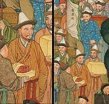
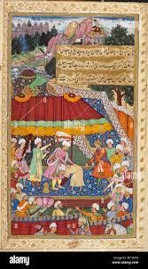
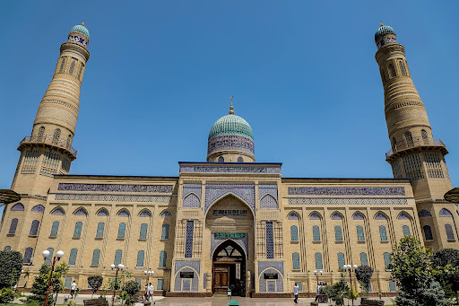
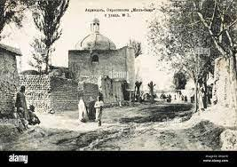
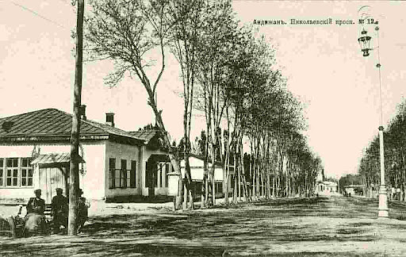
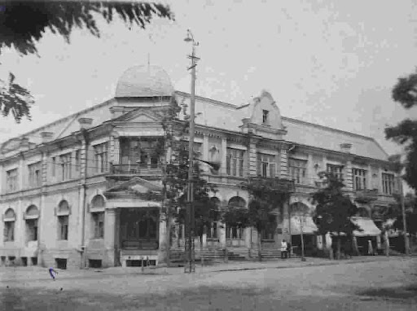
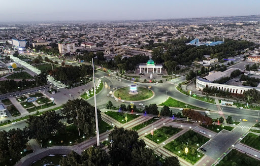

History
The origin of the name of the city is uncertain. Arab geographers of the 10th century referred to Andijan as "Andukan," "Andugan," or "Andigan."[8] The traditional explanation links the name of the city to the Turkic tribal names Andi and Adoq/Azoq.[9]
Andijan, one of the oldest cities in Central Asia, is situated in the eastern part of modern Uzbekistan within the fertile Fergana Valley. This strategic location has endowed Andijan with a rich and diverse history, making it a focal point for trade, culture, and political power throughout various historical periods.
Ancient Beginnings
The origins of Andijan trace back to ancient times, with evidence of settlement as early as the 5th or 4th centuries BCE. Initially, the region was inhabited by the Dayuans, an Iranian-speaking people who were renowned for their skills in agriculture, trade, and craftsmanship. The Fergana Valley’s fertile land supported extensive agriculture, and Andijan quickly emerged as an important agricultural and trading hub.
The strategic position of Andijan along the Silk Road played a pivotal role in its early development. This ancient trade route connected China to the Mediterranean, passing through Central Asia and facilitating the exchange of goods, ideas, and culture. The Silk Road brought prosperity to Andijan, as it became a crucial stop for caravans carrying silk, spices, precious metals, and other goods.
During the Hellenistic period, following the conquests of Alexander the Great in the 4th century BCE, the region saw a significant influence of Greek culture. Andijan, as part of the broader Greco-Bactrian Kingdom, experienced a fusion of Greek and local cultures, which left an enduring impact on its urban development and art. The introduction of Hellenistic urban planning and architectural styles is evident in the archaeological remains from this period.
Islamic Influence and the Karakhanid Era
The arrival of Islam in Central Asia in the 8th century CE marked a significant transformation for Andijan. The Arab armies, representing the Umayyad and later the Abbasid Caliphates, brought Islam to the region, leading to profound cultural, religious, and social changes. Andijan, like many other Central Asian cities, became a part of the Islamic world, integrating Islamic principles and practices into its daily life.
One of the most influential periods in Andijan's early Islamic history was under the rule of the Karakhanid dynasty. The Karakhanids were a Turkic dynasty that ruled over parts of Central Asia from the 9th to the 13th centuries. They were among the first Turkic rulers to convert to Islam, and under their reign, Andijan flourished as a center of Islamic learning and commerce in Ferghana Valley.

The Karakhanids contributed significantly to the architectural and cultural heritage of Andijan. They built numerous mosques, madrasas (Islamic schools), and caravanserais (inns for travelers), which facilitated the growth of Andijan as a vibrant hub on the Silk Road. The city’s markets were renowned for their diversity and vibrancy, attracting traders and scholars from across the Islamic world.
Timurid Renaissance
In the late 14th century, Andijan entered a new golden age under the Timurid Empire. Timur, also known as Tamerlane, founded the empire and recognized the importance of Andijan as a strategic and economic center. He invested in the reconstruction and development of the city, enhancing its infrastructure and cultural institutions.

One of the most significant figures in Andijan's history during the Timurid period was Babur, born in the city in 1483. Babur, a descendant of Timur, is best known for founding the Mughal Empire in India. His early life in Andijan profoundly influenced his later achievements. Babur's memoirs, known as the "Baburnama," provide a detailed account of his formative years in Andijan and offer valuable insights into the city's culture and society during the Timurid era.
Under the Timurids, Andijan became a prominent cultural and intellectual center. The city attracted scholars, poets, and artists, contributing to the Timurid Renaissance. This period was characterized by a flourishing of arts and sciences in Central Asia. Architectural projects from this era, such as grand mosques and public buildings, reflected the city's prosperity and importance.
The Shaybanid and Khanate Periods

In the early 16th century, the decline of the Timurid Empire led to the rise of the Shaybanid dynasty. The Shaybanids, a branch of the Uzbek tribes, established control over much of Central Asia, including Andijan. The Shaybanids continued to promote Andijan as a center of trade and culture, though the city faced challenges from internal strife and external threats. During the 17th and 18th centuries, Andijan was part of the Kokand Khanate, which further solidified its role as a key city in the Fergana Valley. The Kokand Khans invested in infrastructure, building new palaces, mosques, and markets. Andijan's economy thrived on agriculture, particularly cotton, and the city maintained its status as a significant stop on trade routes.

The Kokand Khanate was known for its cultural and intellectual contributions. It was a period of relative stability and prosperity for Andijan. The city continued to attract scholars, poets, and artists, maintaining its reputation as a center of learning and culture.
Russian Conquest and Imperial Influence
The 19th century brought significant changes to Andijan with the expansion of the Russian Empire into Central Asia. In 1876, the Russian Empire annexed the Kokand Khanate, incorporating Andijan into its territories. This period marked the beginning of substantial Russian influence over the region's political, economic, and social structures.

The Russians implemented new administrative practices and infrastructure projects aimed at integrating Central Asia into the broader Russian Empire. Andijan saw the construction of modern roads, railways, and telegraph lines, which facilitated communication and trade. The city’s economy began to diversify, with the introduction of new industries and the expansion of agricultural production, particularly cotton, which became a major cash crop under Russian rule. The Russian period also brought changes in the social and cultural landscape of Andijan. The Russian administration introduced European-style education and legal systems.
Soviet Era Transformations
The Bolshevik Revolution in 1917 and the subsequent establishment of Soviet rule brought another wave of profound changes to Andijan. In the early 1920s, the Soviet authorities implemented extensive reforms aimed at transforming the region’s economy, society, and culture. Andijan, as part of the Uzbek Soviet Socialist Republic (SSR), experienced significant industrial and agricultural development.
One of the most impactful policies during the Soviet era was the collectivization of agriculture. The Soviet government established collective farms (kolkhozes) and state farms (sovkhozes), fundamentally changing land ownership and farming practices. This period also saw the introduction of mechanized farming techniques and large-scale irrigation projects, which increased agricultural productivity but also led to social dislocation and hardship for many farmers.

Industrialization was another cornerstone of Soviet policy. Andijan witnessed the construction of factories and industrial plants, which diversified the city’s economy and created new employment opportunities. The development of industries such as textile manufacturing, machinery, and chemicals transformed Andijan into an important industrial center in the Uzbek SSR.
The Soviet period also brought significant advancements in education, healthcare, and social services. The government invested in building schools, hospitals, and cultural institutions. Literacy rates improved, and the city became a hub for scientific and technical education. However, these advancements were accompanied by strict control over cultural and religious practices, with the Soviet authorities often repressing traditional and religious expressions.
Independence and the Post-Soviet Era
The collapse of the Soviet Union in 1991 marked the beginning of a new era for Andijan, as Uzbekistan gained independence. The transition to independence brought significant challenges, including economic restructuring, political instability, and social change. Andijan, like many other cities in Uzbekistan, faced the difficulties of adapting to a market economy and building new political institutions. 
Since gaining independence, Andijan has made significant strides in various sectors, transforming itself into a vibrant and modern city. This progress is reflected in its economic development, infrastructure improvements, educational advancements, and cultural revival.
Economic Development
Andijan has emerged as a vital economic hub in Uzbekistan. The city has leveraged its strategic location in the Fergana Valley to become a center for trade and commerce. The growth of small and medium-sized enterprises (SMEs) has been particularly noteworthy, contributing to job creation and economic diversification. Andijan's automotive industry, led by the UzAuto Motors plant, has played a crucial role in the city's economic expansion, producing vehicles that are exported to various countries.
Agriculture remains a cornerstone of Andijan's economy, with the region being one of the leading producers of cotton, fruits, and vegetables in Uzbekistan. Efforts to modernize agricultural practices and invest in agro-processing industries have enhanced productivity and value addition, benefiting local farmers and businesses.
Infrastructure Improvements
The post-independence era has seen significant investments in Andijan's infrastructure. Modern roads, bridges, and transportation networks have improved connectivity within the region and beyond. The development of the Andijan International Airport has facilitated better access for business and tourism, promoting further economic growth.
Urban development projects have transformed Andijan's cityscape, with new residential areas, commercial complexes, and public amenities enhancing the quality of life for its residents. The construction of modern healthcare facilities and the renovation of existing hospitals have improved access to medical services, ensuring better healthcare outcomes for the population.
Educational Advancements Education has been a focal point of Andijan's progress, with substantial investments made to improve educational infrastructure and quality. New schools, colleges, and vocational training centers have been established, providing young people with better educational opportunities. Andijan State University has expanded its programs and facilities, becoming a leading institution for higher education in the region.
The emphasis on STEM (Science, Technology, Engineering, and Mathematics) education has been particularly impactful, aligning with the city's vision to become a center for innovation and technology. Initiatives like the Digital City Andijan, with projects such as the Digital Girls Project and Digital Intern Project, are equipping the youth with the skills needed to thrive in the digital economy.
Cultural Revival
Andijan's cultural heritage has been revitalized in the years since independence. The city has preserved and celebrated its rich history through the restoration of historical sites and the promotion of cultural events. Festivals, exhibitions, and cultural programs have become a regular feature, attracting visitors and fostering a sense of community pride.
Efforts to promote traditional arts and crafts have also been successful, providing artisans with platforms to showcase and sell their work. This cultural renaissance has not only preserved Andijan's heritage but also contributed to the local economy through tourism and cultural industries.
Social Development
Social development initiatives have aimed at improving the standard of living for all citizens. Programs focused on poverty reduction, social welfare, and community development have had a positive impact on the vulnerable segments of the population. Access to clean water, sanitation, and affordable housing has been prioritized, contributing to better living conditions.
Women's empowerment and gender equality have also been key areas of focus. Projects aimed at providing education and employment opportunities for women have seen significant success, contributing to greater gender balance in the workforce and society.